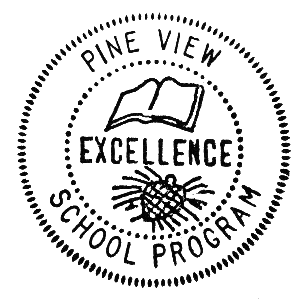

Pine View Class of 1982
Reunion
30th Reunion (at Facebook), weekend of July 13, 2012
Other Stuff
If you're a Pine View School (Sarasota County, Florida)
student or faculty alumnus and want the password, look on the Facebook reunion page,
or try to guess: all lower case, no spaces, the username and password make
a simple 3-word phrase that is descriptive and with which you will immediately identify,
regardless of your graduating class.